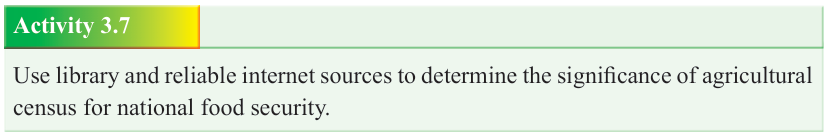
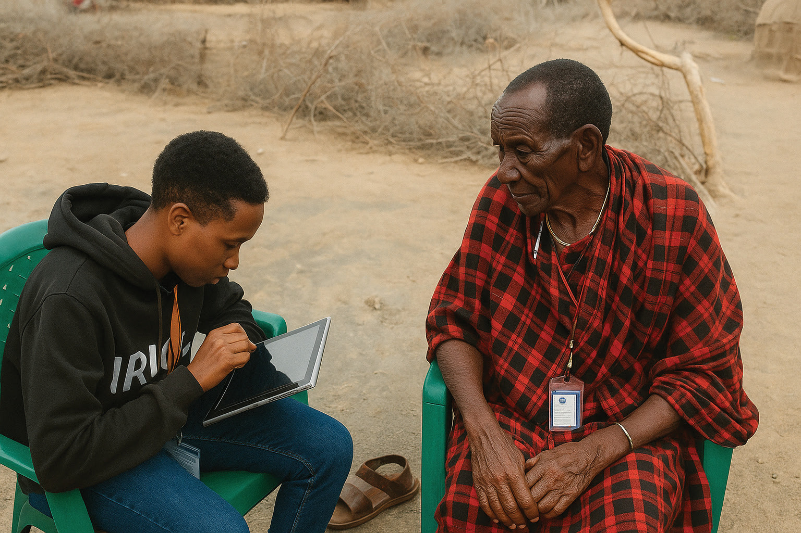

Form Two
Tanzania Institute of Education (TIE)

Bible Knowledge
50


Figure 3.2: Census data collection under process
Activity 3.7
Use library and reliable internet sources to determine the significance of agricultural census for national food security.
The Importance of census
Census is very important for the development and welfare of the society and the
Church. The information generated by a population and housing census is crucial for development, because the data helps in planning and policy making processes.
Planners need this information for all kinds of development works, including: Assessing
demographic trends; analysing socio-economic conditions; designing evidence-based
poverty-reduction strategies; monitoring and evaluating the effectiveness of policies;
and tracking progress toward national and internationally agreed development goals.
In addition, census helps policy makers to be aware of population issues. In this view,
census information is an important tool for identifying forms of social, demographic or economic exclusions, such as inequalities relating to race, ethnicity, and religion, as well as, disadvantaged and marginalized groups such as persons with disabilities and the poor.
On one hand, an accurate census can empower local communities by providing them
with the necessary information to help them participate in local decision-making, and
to ensure that they are represented. On the other hand, agricultural census gives a snapshot of the structure of the agricultural sector in a country, and when compared with previous censuses, it provides an opportunity to identify trends and structural transformations of the sector, and points towards areas that need policy intervention.